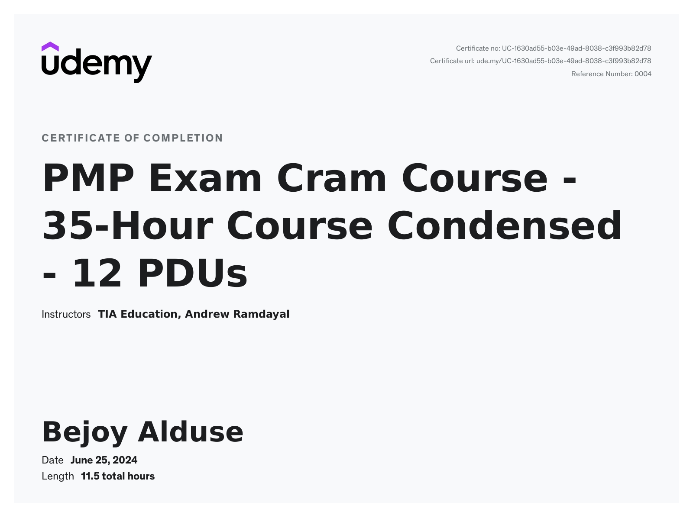

Certifications
Coursera – Python for Data Science and AI
Project Management Professional (PMP)
Coursera – Machine Learning
AWS Certification
Google Scholar

Phone: 850-345-8504 | Email: bejoy.alduse@gmail.com | LinkedIn | GitHub
Scientist with deep experience in developing predictive models, statistical, and machine learning solutions for high-value insurance and state assets, giving direction and insight. Led a team of engineers to deliver an end-to-end, million-dollar asset classification project for Alabama State. Expert in translating complex modeling workflows into clear, actionable insights for technical and non-technical stakeholders. Develop frameworks and methods to multiply output from teammates. Proven record in building scalable modeling frameworks, pipelines, and governance-grade documentation across ambiguous, high-impact projects.
Built predictive models and compliance workflows for $5.6B+ property portfolios; improved model performance and cost-balance decisions for Alabama State assets. SQL and Python. Designed data systems integrating spatial maps, pipelines, and feature engineering; automated auditing and reporting processes, improving efficiency by 30%. Developed visualization on JS+HTML platforms. Led end-to-end modeling initiatives using regression, ML, and scalable data engineering methods to support production-grade portfolio risk evaluation.
Developed risk-evaluation systems used by a major insurer (AIG) for portfolio analysis; delivered models with <10% deviation from vendor standards in hurricane risk. Executed large-scale simulations on Linux/PBS clusters; performed validation, verification, and documentation to support model governance requirements. Built ML and NLP pipelines (corrosion prediction, topic modeling, sentiment analysis via Hadoop); collaborated with engineering, meteorology, and analytics teams to support cross-functional decisions.
Developed Bayesian risk evaluation models for residential buildings, infrastructure, data collection for roof damage.
Email: aldusejoy@gmail.com
Mobile: 850-345-8504